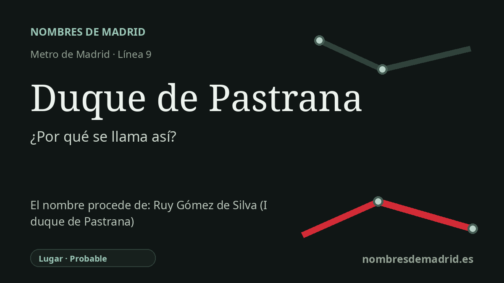

Publicado el · Investigación de Nombres de Madrid · Cómo verificamos cada origen · 10 fuentes consultadas
Respuesta rápida
La estación toma su nombre de la plaza del Duque de Pastrana, uno de los antiguos núcleos de Chamartín de la Rosa. El título de duque de Pastrana nació en 1572 con Ruy Gómez de Silva, pero el topónimo madrileño alude sobre todo a la casa ducal y a su historia patrimonial en la zona.
La historia del nombre
La estación de Duque de Pastrana toma su nombre de la plaza situada en su entorno: la plaza del Duque de Pastrana, en Chamartín. Las fuentes de transporte la sitúan en la línea 9, y un registro del archivo fotográfico de Metro de Madrid fecha la inauguración del tramo Plaza de Castilla-Avenida de América el 30 de diciembre de 1983. La estación, por tanto, conserva un topónimo urbano local en lugar de crear una denominación conmemorativa nueva.
Ese nombre local enlaza con la historia de Chamartín de la Rosa. La historia distrital publicada por el Ayuntamiento de Madrid señala que el núcleo antiguo de la aldea se formó alrededor de la actual plaza del Duque de Pastrana, que corresponde a la antigua plaza Mayor de Chamartín. Por eso el nombre de la estación tiene varias capas: remite a un título nobiliario, pero también al centro cívico de un municipio que fue anexionado a Madrid en 1948.
El título que hay detrás del topónimo es el ducado de Pastrana. La Guía Oficial de Grandezas y Títulos del Reino recoge que el ducado fue concedido el 20 de diciembre de 1572 a don Ruy Gómez de Silva, príncipe de Éboli, consejero de Estado y servidor cercano de Felipe II. La Real Academia de la Historia lo identifica como cortesano nacido en Chamusca, Portugal, en 1516 y fallecido en Madrid el 29 de julio de 1573, incorporado a la corte castellana como paje en el séquito de Isabel de Portugal en 1526.
En Chamartín, sin embargo, la clave más relevante es la presencia de la casa ducal, no solo la biografía del primer duque. La zona conserva el Palacio de los Duques de Pastrana, entre la calle de Platerías y el paseo de la Habana, declarado monumento histórico-artístico nacional en 1979. Otras fuentes relacionan también a los Pastrana/Infantado con fincas e instituciones del antiguo Chamartín, como la Quinta del Recuerdo y el colegio jesuita cercano.
Por eso, la explicación pública más prudente es esta: la estación se llama así por la plaza del Duque de Pastrana, cuyo nombre recuerda a los duques de Pastrana y su vinculación histórica con Chamartín. Ruy Gómez de Silva es un antecedente esencial porque fue el primer titular del ducado, pero no se ha localizado un acuerdo municipal de denominación que pruebe que la plaza madrileña se dedicara específicamente a él y no al título o a la casa ducal. El Callejero histórico oficial da ahora la fecha formal del nombre vigente, 7 de abril de 1965, y registra nombres anteriores para la misma plaza, como plaza Mayor de Chamartín de la Rosa, plaza de la Constitución y plaza de Calvo Sotelo.